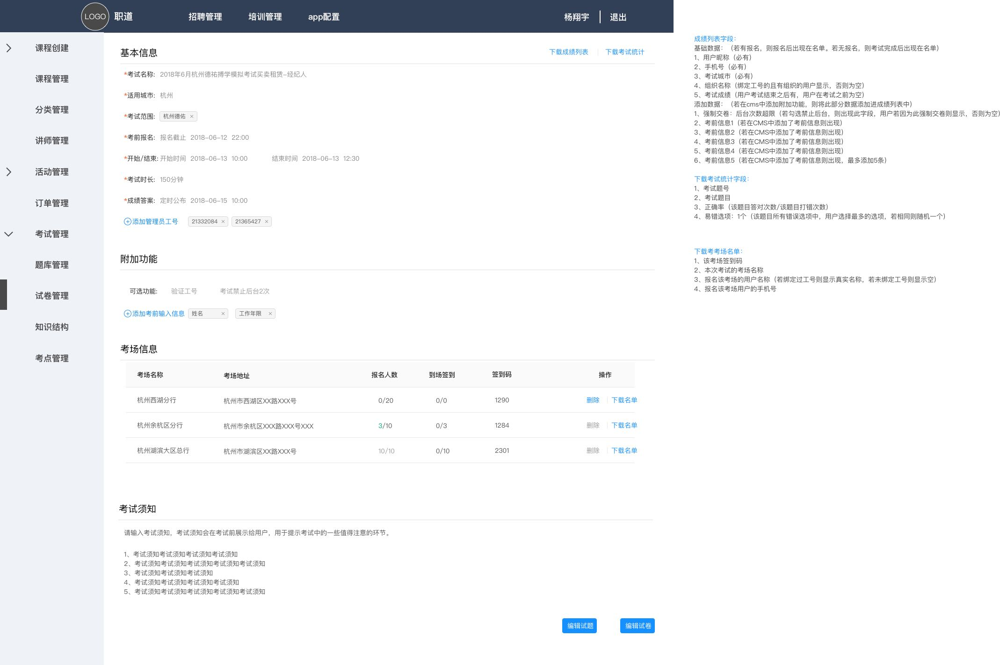
考试系统中增加试卷管理页。
该页签需要用户具有：【考试管理-查看试题】权限才可显示。
该页签需要用户具有：【考试管理-新建试卷】权限才可新增
试卷需要用户在试卷中添加[管理员]权限才可修改。
该试卷系统适用于目前的：学习晨会、模拟考试、活动考试。
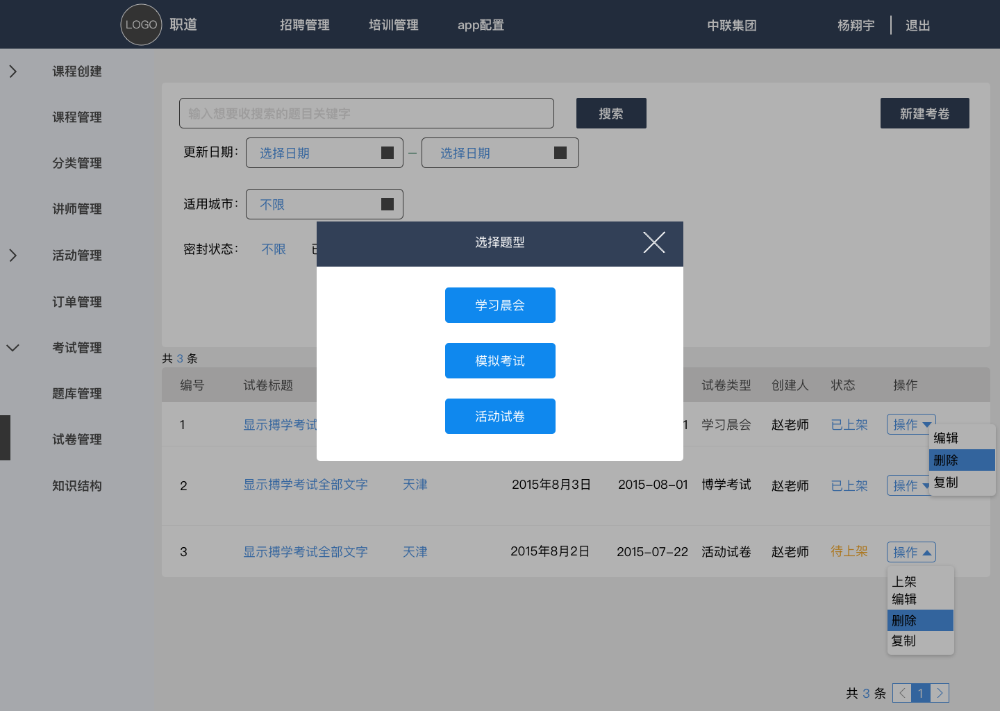
点击新建试卷弹出选择试卷选项框
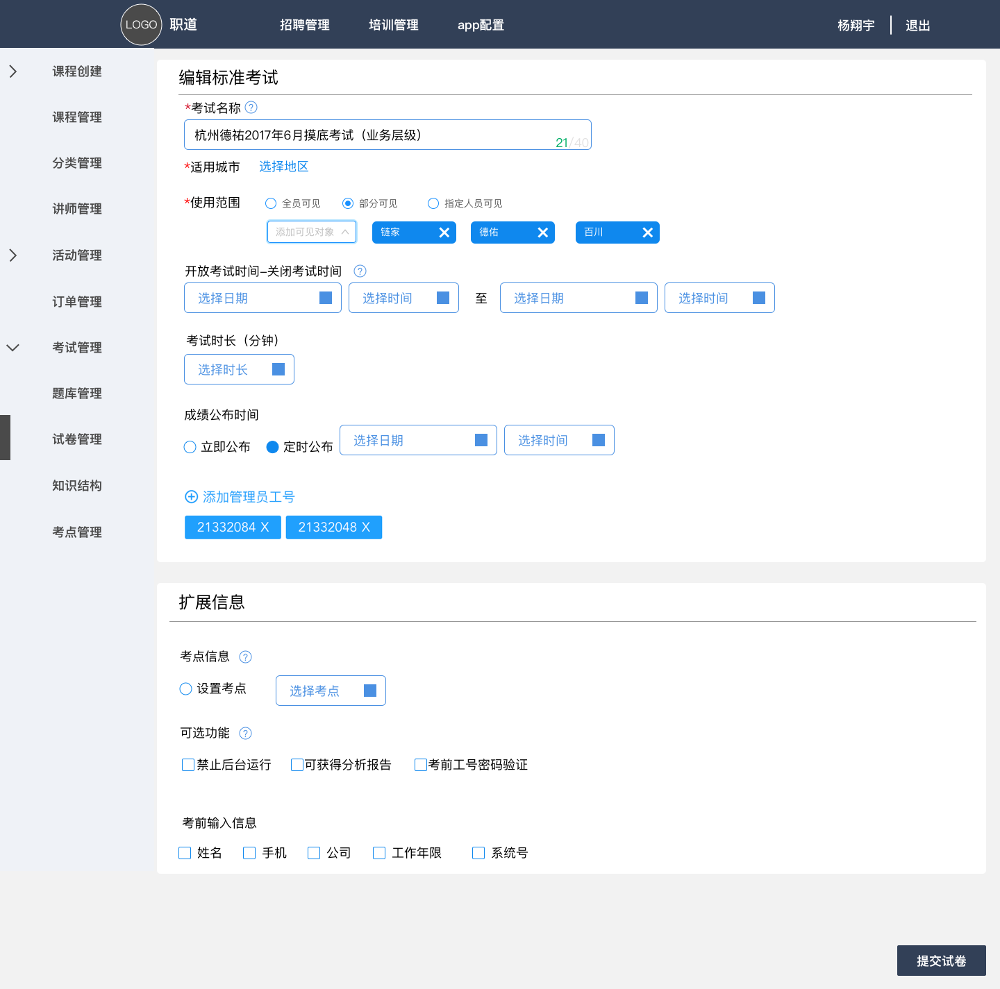

考试名称：输入该考试的名称，字数不超过40个字符。
适用城市：选择使用的城市，城市为题库中包含的城市。
使用范围：与课程的可见性功能一致，可以选择全部用户、部分用户、指定用户。指定用户需要能够一次上传1W名用户。通过手机号或者工号上传。
考试时间：考试开始的时间和结束的时间。非必填，若不填写则时间不限。
考试时长：非必填项，考试的时长。开始考试后若时间到则自动收卷。若不填则不限时长。
成绩公布时间：选择立即公布则在考试结束后立即公布成绩，或者选择指定时间公布成绩。
扩展信息：非必选项，若该考试有设置考点，则选择该考试能够选择的考点。
可选功能：
禁止后台运行，若选择中，则会出现禁止后台运行次数选项，若用户后台运行次数大于设定值，则自动收卷。
可获得分析报告：对那些有知识点的考试，若用户选中，则在公布成绩后，出现知识点分析图谱。
靠前工号密码验证：若选中，则在考试开始前，需要用户通过工号密码登录。
靠前输入信息：
选中则会出现在考试开始前的报名信息界面。需要用户输入完整信息才能进行下一步。
用户点击新建考试之后出现的模板
用户点击保存后的试卷模板
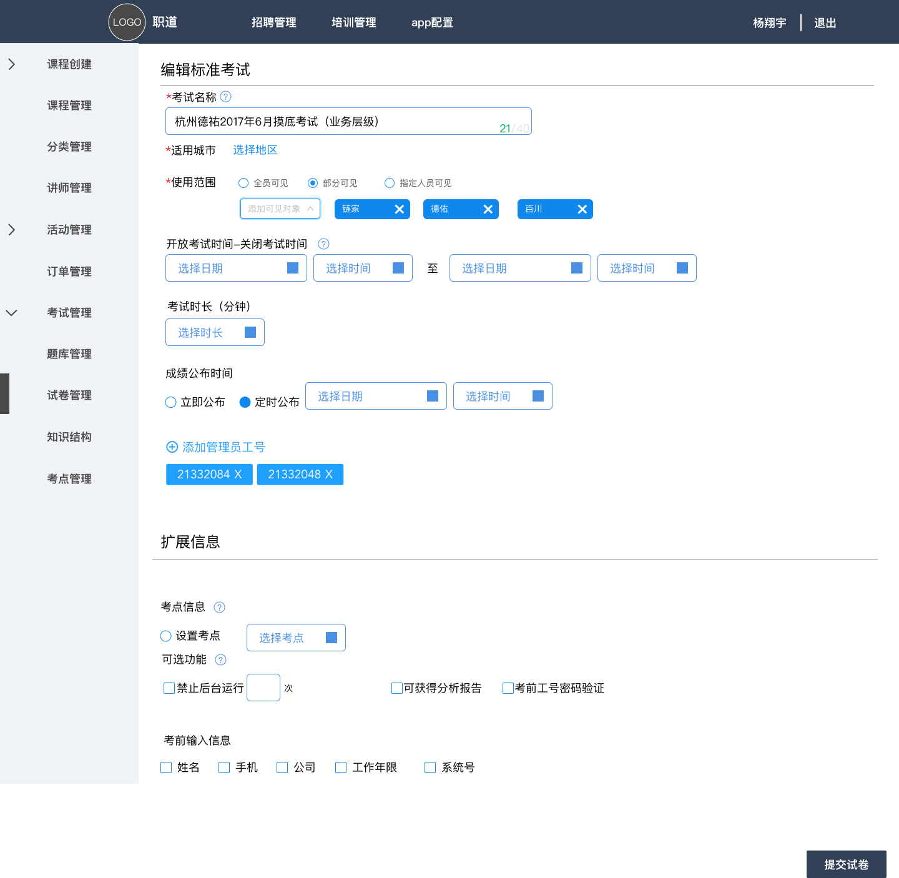
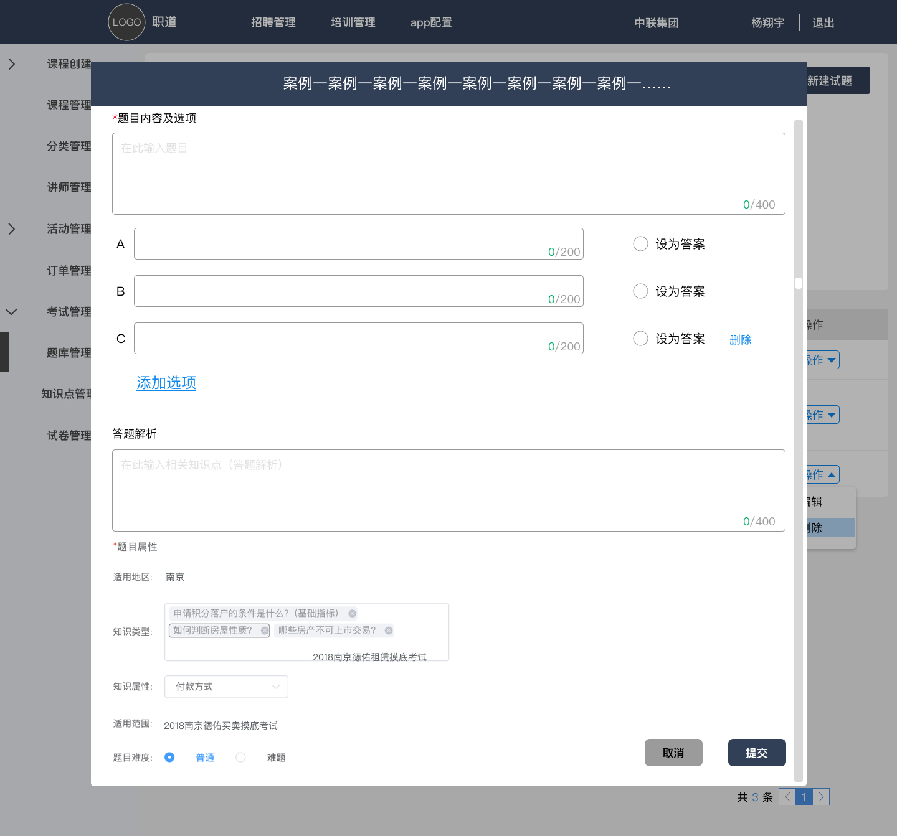
在试卷管理中点开添加题目，适用范围默认显示该试卷名称，且不可更改
在试卷管理中点开添加题目，适用地区默认显示该试卷所在地区，且不可更改
签到码：每个标准考试都会生成一个签到码，用于用户参加考试时进行签到用。每个考试的签到码不同。
签到码格式为10位大写英文+数字。
参考人数：参加考试的人数
签到人数：在考试现场进行签到，即完成APP输入验证码进行签到的行为。
完成人数：成功提交考试的人数。
考试状态：未开始、进行中、已结束。
下载成绩列表：可以下载成绩列表，包括用户姓名、工号、成绩
下载考题统计：题目、题型、正答率、1个易错选项
下载考试签到表：考点名称、报名人姓名、手机号、系统号。
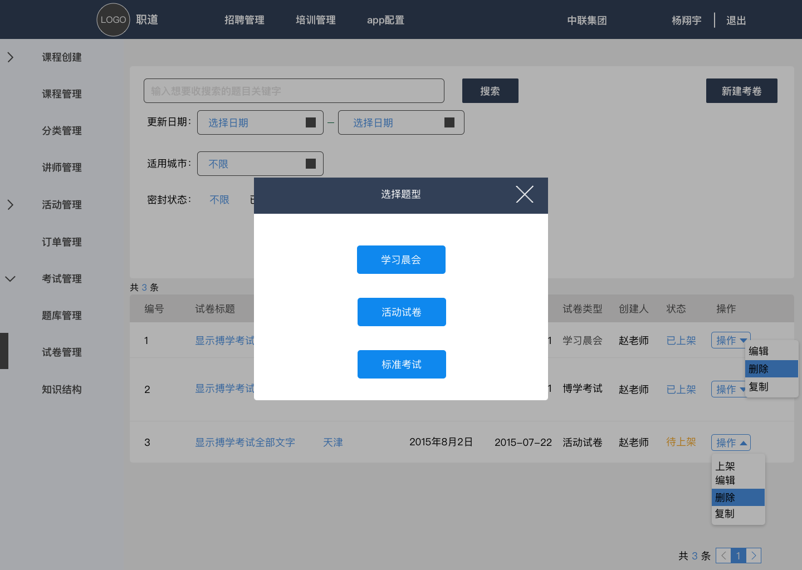
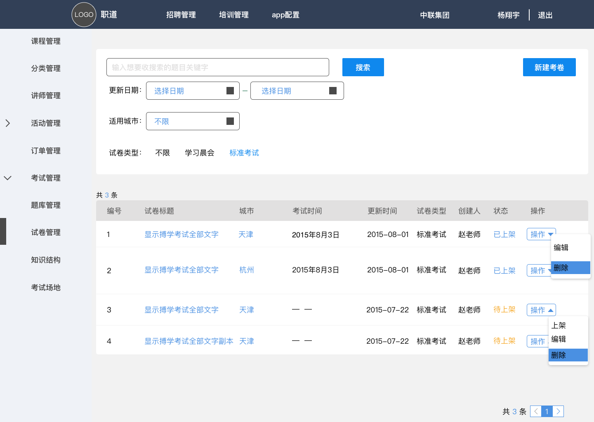
试卷类型：增加标准考试类型
试卷类型：试卷类型增加标准考试。
考试编号：标准考试于学习晨会（老）的编号不重复。编号用于识别考试，即考试ID。未来可用作索引考试的key。
新建考卷：点击新建考卷弹出考试界面，在试卷类型中选择【标准考试】后弹出标准考试编辑界面。
操作规则：标准考试试卷，在考试时间开始之前，可以对其内容进行编辑，在考试开始之后，则不可进行编辑。
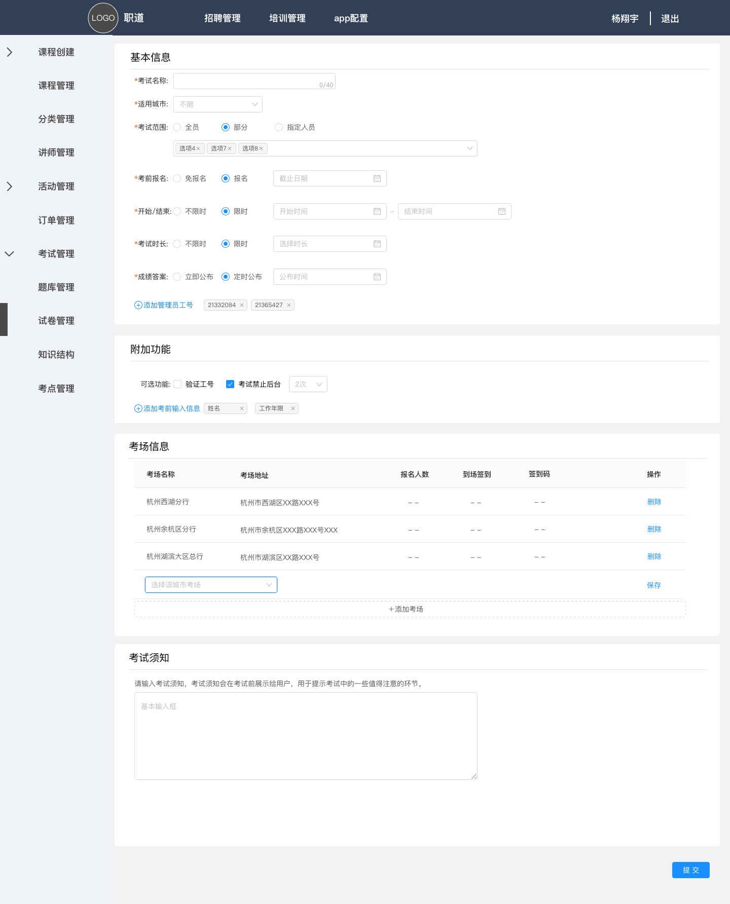
标准考试编辑界面
基本信息：考试的基础信息
考试名称：必填，限制40个汉字以内。超出则无法继续输入。
适用城市：必填，城市由后端接口录入，用户可进行选择，且只能选择一个城市。
考试范围：必填，默认全员；若选择部分，则可以根据会员体系的组织进行用户的选择，可多选；若选择指定人员，则可以添加指定人员，功能与线上课程指定人员可见功能一致。填写后只有在群体内的用户才能对试卷可见。其他用户不可见。
考试报名：必填，默认免报名。若选择报名，则必须填写报名截止日期，精确到小时:分。若选择需要报名，则在APP上考试前会出现报名环节。且在考试首页会显示【报名截止日期】。若选择面报名，则考试不显示报名页面。
开始/结束：必填，默认选择不限时，显示考试的开始时间和结束时间，精确到小时:分。不限时考试用户可在任何时间开始考试；若限时，则用户只能在开始时间到才能进入考试，到考试结束时间若还未提交，则会被强制提交试卷。
考试时长：必填，考试的时间，默认显示不限时。若不限时，则在APP上不限时限制时间，且用户可以答多久都没关系，除非考试结束时间到，会被强制交卷。若填写了时长，则在考试完成时间之前，若达到考试时长，则也会自动交卷。用户显示的倒计时时间为当前时间到考试结束时间的时间段与剩余考试时长中取较短时间。
成绩答案：必填，默认显示立即公布，考试成绩都为考试结束后才公布。若选择定时公布，则出现时间控件，选择时间后，会在时间到达时可查询成绩与解析。时间精确到时:分。
添加管理员工号：该考试只有创建人能够看到。若创建人添加其他管理员工号后，添加成功的人也可以充当管理员职责，能够对考试界面进行编辑。
附加功能：考试的附加功能
可选功能：非必填
1、验证工号：选择此项后，用户从考试入口点击进入考试主页后，点击开始或者报名，则弹出企业认证界面，需用户绑定正确账号和密码后可进行下一步。
2、考试禁止后台：选择此项后会出现选择次数控件，可以选择2-10次。选择后用户将APP后台运行超过8秒则算作一次后台操作。超过规定限制后，会被系统强制交卷。
3、添加靠前输入信息：可以选择在点击报名后，验证工号后（若有），选择考场前（若有）。可随意添加用户输入字段，但一个考试最多添加5项。用户在添加时可以编辑字段，同时选择输入格式，分为：文字和数字格式。
考场信息：考试的考场信息
点击添加后会出现一条下拉菜单控件，用户可选择该城市下的考场，下拉菜单显示考试名称列表。
添加后显示考试名称，考场地址。在提交之前，报名人数，到场签到人数若无数据则不显示，若有数据则显示具体人数。且若有人报名或签到则删除按钮置灰，不可点击。
考场信息若填写内容，则会出现在报名环节。
考试须知
用户可编辑富文本的考试须知。非必填，若填写则会出现在用户点击开始考试之后，答题之前的位置。
提交按钮，点击后，若有必选项未填写，则弹出红色提示toast:"请将必选项填写完整”同时在未填写的必选项后面显示红字：“请完善次项信息”。
标准考试查看界面
在查看状态可添加或删除管理员工号，立即生效
在查看状态可编辑考生输入信息，立即生效，在考试开始后不可添加与删除。生成表格已最后输入信息的维度字段为准。
操作：
删除按钮在该考场有报名人数时会泽不可点击。
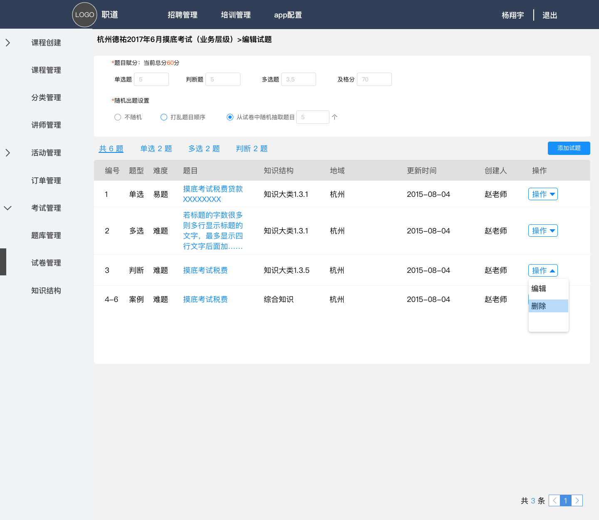
标准考试出题界面
题目赋分：
必填、无默认值。分为单选、多选、判断（通用与案例题中的此类题型）可输入到小数点后两位。
及格分：设置及格分。若最终成绩小于此分数，则为不及格。
随机出题设置：必填，默认不随机；打乱题目顺序为在保持大题型顺序不变的情况下，将题目顺序打乱；从试卷中随机抽取题目N个，为从试卷题库中抽随机取几个题目尽心测试。抽取题目数量不得大于试卷题目数量。
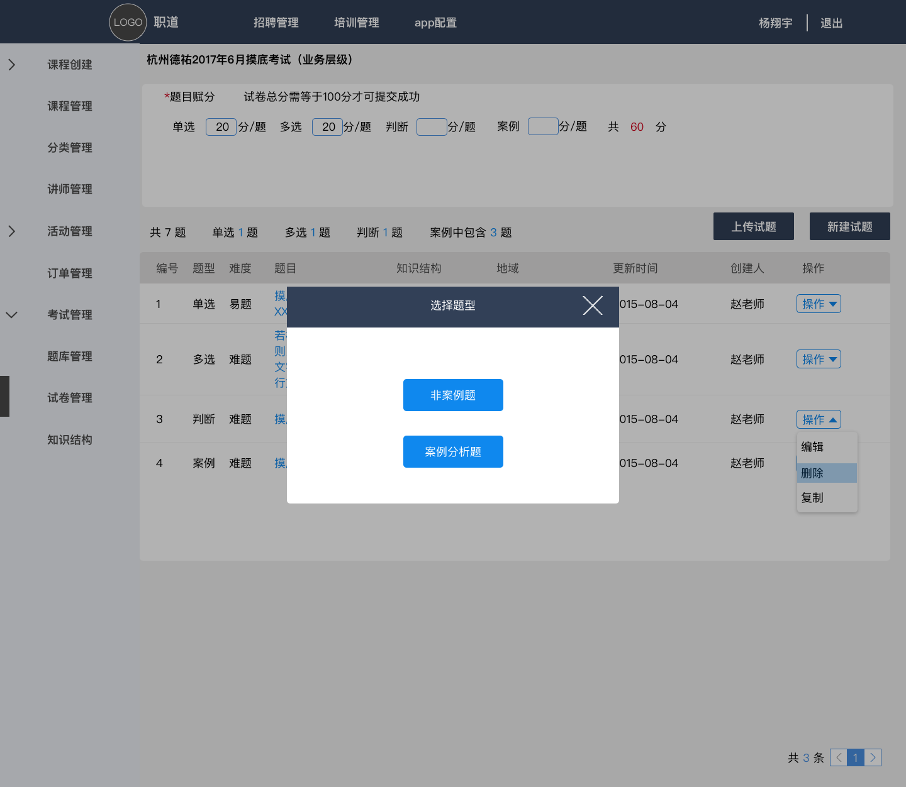
选择题型界面
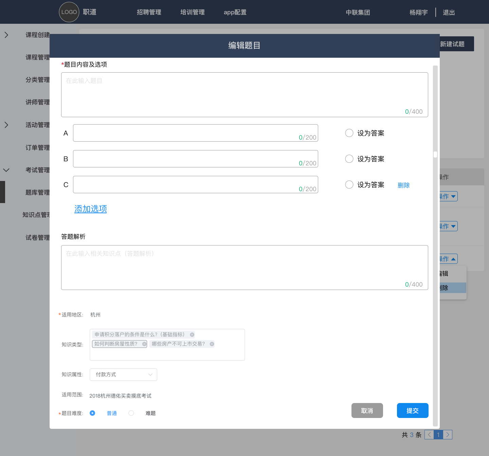
非案例提编辑界面
适用地区默认显示改试卷的地区
知识类型非必填
知识属性非必填
题目难度必填一个
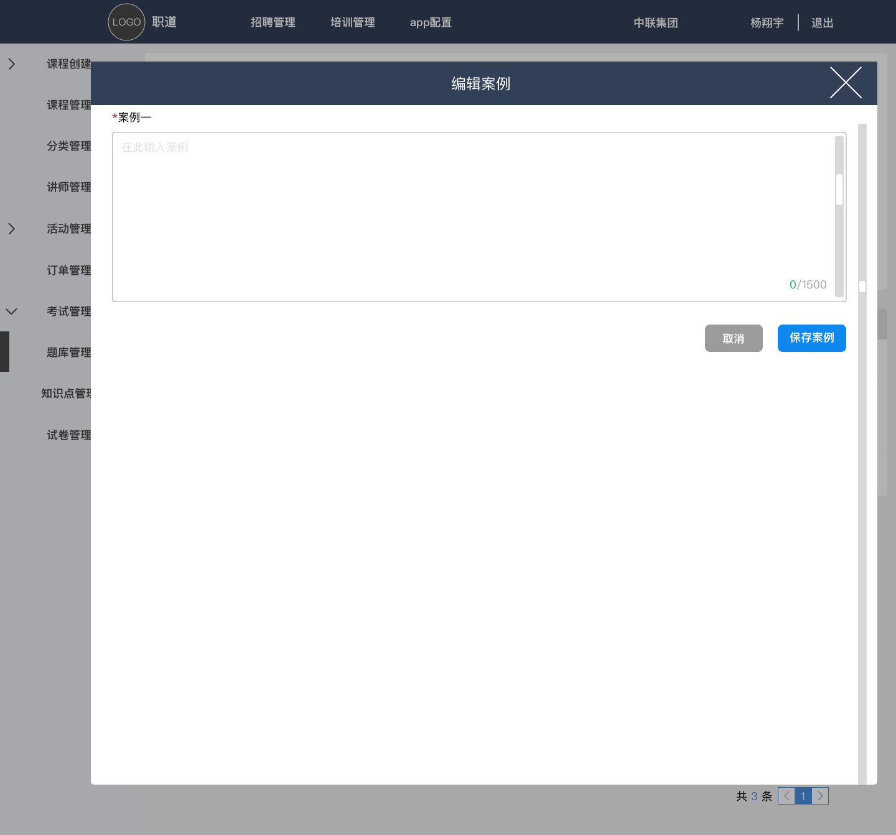
案例编辑界面
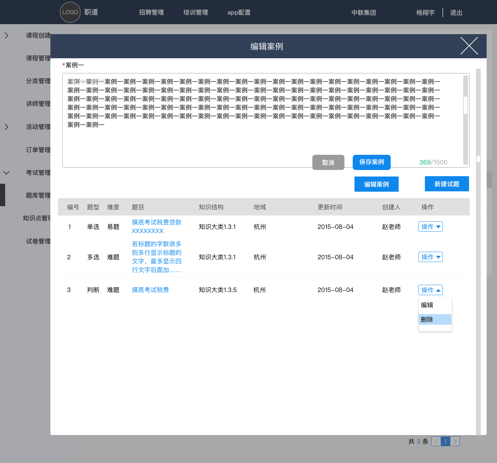
案例编辑完成后可添加题目
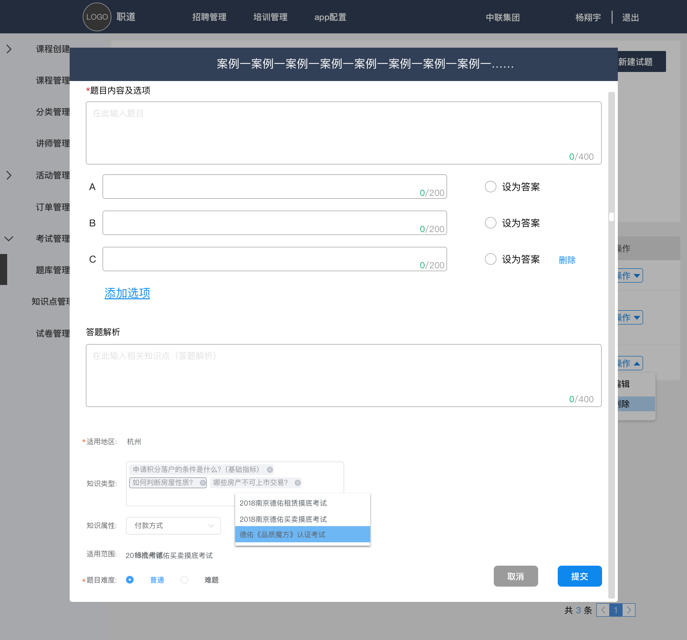
在案例中添加题目，标题栏显示案例的前段文字